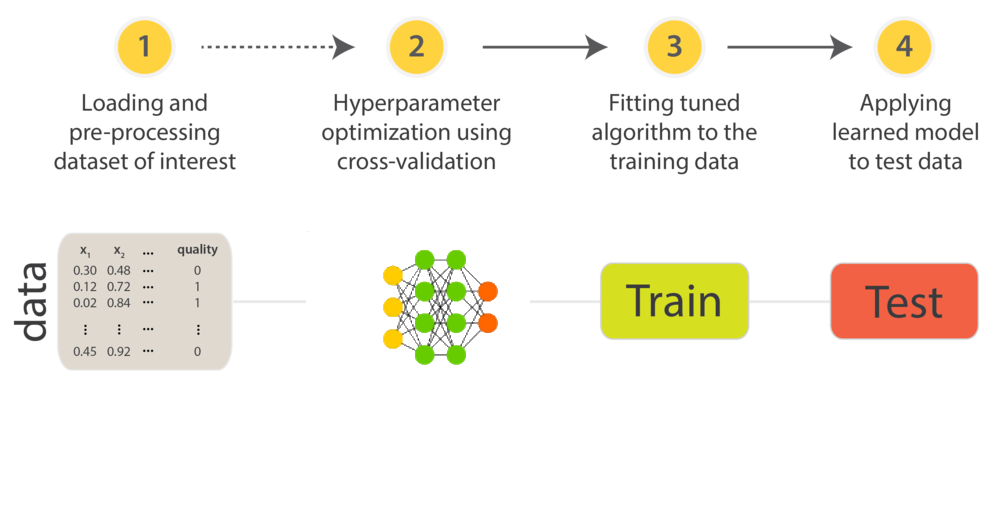

Most machine learning algorithms have a set of configuration variables which the configuration will have direct effect on results. This configuration, called hyperparameter optimization, is made prior training of each dataset (because often there is no configuration that is optimal for all domains) through tuning of hyperparameters (configuration parameters). It is a very crucial task as the performance of the algorithm can be highly dependent of the choice of hyperparameters. Generally the set of hyperparameters can be troublesome because their combination of trials require long time.
In this webpage the process of parametrization can be analyzed through plots from the optimization time. An example of the process is shown in the figure below. We focus our classification task on the text area.
In this project we present the visualization from the optization process of two neural nets archtectures, named Multilayer Perceptron (MLP) and Deep Multilayer Perceptron (DMLP). Shown here.